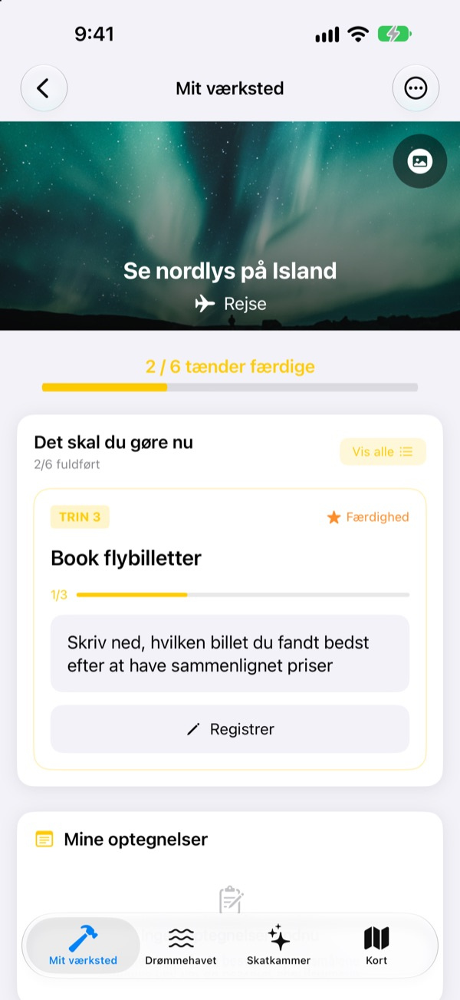
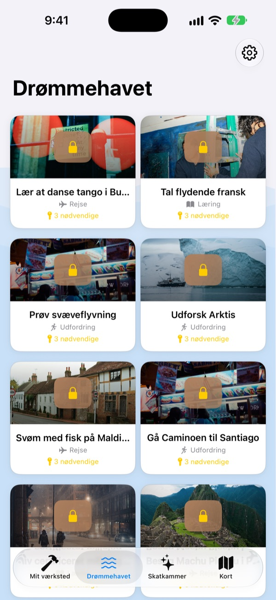
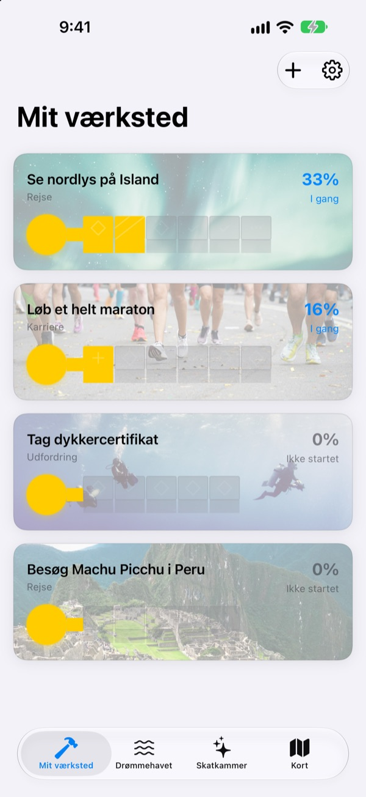
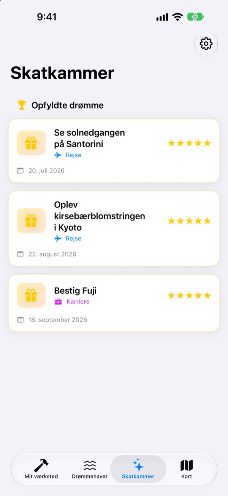

Skriv ikke bare
bucketlisten ned
Vælg en drøm, og de små trin, der fører derhen, bliver tænderne i en nøgle. Svar på dagens trin, ét spørgsmål ad gangen, og før du ved af det, står kisten åben.
Køb én gang, og alle funktioner er dine. Intet abonnement, ingen reklamer.

Gør nøglen færdig
Drømmen om nordlyset på Island mangler to trin. Svar på hvert spørgsmål med en linje (eller lad det stå tomt), og tryk på Næste. Hvert færdigt trin fylder en tand, og en hel nøgle åbner kisten.
Har du skrevet en bucketliste og glemt den igen?
"Se nordlyset" er så stort, at du ikke ved, hvor du skal begynde, så det bliver stående på listen i årevis. Dream Seeker deler drømmen op i trin, du kan tage i dag, som at undersøge sæsonen, spare op og bestille fly, og viser kun det ene, der er aktuelt nu.
Vælg mellem over 590 drømme
Rejser, oplevelser, præstationer, sundhed, læring og relationer. Drømme fra seks områder flyder rundt i kister på Drømmehavet. Hent en til dit værksted, og trinnene er allerede delt op.
Er din drøm der ikke? Lav den selv med en titel, et område og de trin, der skal til.

Én tand ad gangen, lige nok til i dag
I Mit værksted ser du med det samme, hvor langt hver drøms nøgle er nået. Det aktuelle trin står øverst, og når du svarer på dets spørgsmål, fyldes en tand.
Svar og billeder samles i Mine optegnelser, og på tidslinjen kan du se hele vejen tilbage.

Opfyldte drømme i skatkammeret, steder på kortet
Fyld alle tænder, og åbn kisten. Opfyldte drømme samles med dato i skatkammeret, og drømme på pause venter der, til du vil fortsætte.
Drømme med et sted vises på kortet, så du kan se alle de steder, du gerne vil hen.

Kom i gang på tre trin
- 1
Vælg en drøm
Tryk på en kiste på Drømmehavet, og vælg Hent til mit værksted.
- 2
Svar på dagens trin
Svar på spørgsmålene i det øverste trin ét ad gangen for at fylde en tand.
- 3
Åbn kisten
Når alle tænder er fyldt, er nøglen færdig, og kisten åbner.
Seks områder på Drømmehavet
- Rejse
- Se nordlys på Island · Se solnedgangen på Santorini
- Oplevelse
- Prøv faldskærmsspring · Prøv paragliding
- Præstation
- Løb et helt maraton · Trek til Everest Base Camp
- Sundhed
- Tag 20 pull-ups · Få synlige mavemuskler
- Læring
- Tal flydende engelsk · Tal flydende fransk
- Relationer
- Rejs jorden rundt med mine forældre · Bo en måned på Jeju med venner
Hvert område har næsten hundrede drømme. Lav dine egne med Tilføj ny drøm i Mit værksted.
Køb én gang, få det hele
Appen
- Over 590 drømme med spørgsmål til hvert trin
- Dine egne drømme
- Mine optegnelser med billeder og tidslinjen
- Skatkammer og kort
- Vækst-tilstand
- Fremtidige opdateringer
Støt udvikleren (frivilligt)
- Hvis appen hjælper dig, kan du give lidt drikkepenge i Indstillinger
- Drikkepenge låser ikke noget op. Uden dem har du stadig alle funktioner
Engangsbeløb, ikke et abonnement.
Intet i appen koster ekstra. Ingen konto, ingen reklamer.
Ofte stillede spørgsmål
Hvordan kommer jeg i gang?
Tryk på en kiste, du kan lide, under fanen Drømmehavet, og vælg Hent til mit værksted. Svar på spørgsmålene til det aktuelle trin i Mit værksted, så fyldes tænderne én efter én. Når de alle er fyldt, kan du åbne kisten.
Kan jeg tilføje min egen drøm?
Ja. Tryk på Tilføj ny drøm i Mit værksted, og skriv en titel, et område og trinnene derhen.
Hvordan sætter jeg en drøm på pause eller tager den op igen?
Vælg Opgiv denne drøm i menuen for en igangværende drøm, så flytter den til Drøm på pause i skatkammeret. Tryk på Start igen der for at hente den tilbage til værkstedet, eller på Slet helt for at fjerne den.
Hvad er Vækst-tilstand?
En skærm, hvor du styrer dine drømme som en bjergbestigning. Slå den til eller fra under Indstillinger > Visning. Du kan holde styr på frister for hvert trin og forhindringer som penge og tid, som i et projekt.
Billederne vises ikke.
Nogle baggrundsbilleder hentes fra internettet. Tjek, at du er online. Uden forbindelse vises et standardbillede.
Kan jeg flytte mine optegnelser til en ny iPhone?
Dine optegnelser gemmes kun på denne enhed, uden konto eller synkronisering. Gendanner du en ny iPhone fra en iCloud- eller computerbackup, kommer de med sammen med dine andre appdata.
Kan man købe noget i appen?
Nej. Med appen er alle funktioner dine. Drikkepengene i Indstillinger er der kun, hvis du vil sige tak.
Bliver mine drømme og optegnelser sendt nogen steder hen?
Nej. Der er ingen konto, ingen reklamer og ingen analyseværktøjer. Dine drømme, optegnelser og billeder bliver på din enhed.
Hvordan kontakter jeg jer?
Fejl, idéer eller hvad som helst: send det via Send feedback i appens indstillinger eller som DM på Instagram (@lee25_ios).
Spørgsmål eller problemer? Skriv til leeo@kakao.com.